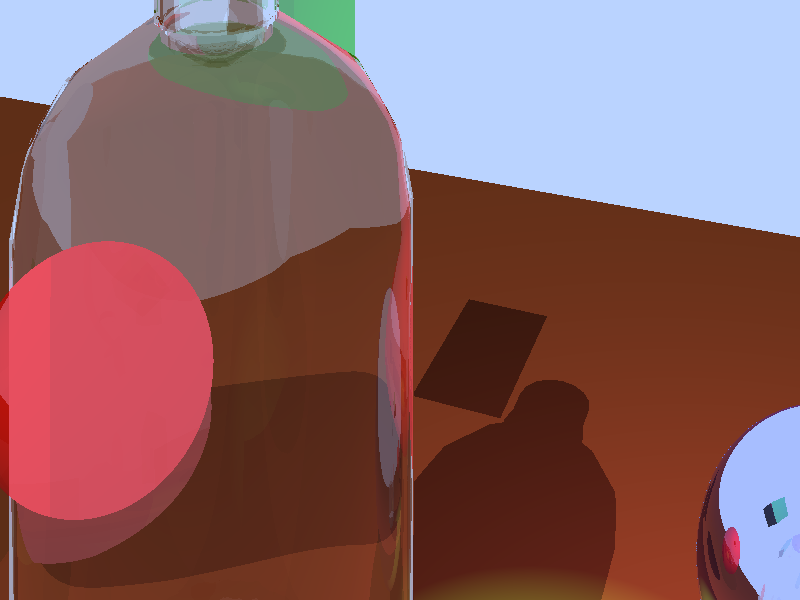

Project 3B Presentation
Challenges I Faced
Some challenges I faced were with spot lights, I was specifically just having a hard time testing them because I was a bit confused on how they were defined. I also struggled at one point where my point lights would show up as very bright artifacts on shiny materials, but I was mistakingly over writing the attenuation. Also with project 3A I struggled with refractions, but I actually did implemnt them almost completely right there was just a small issue with my calculation.
Files Included
- Proj3B-Resources.zip — ZIP: Containing source code, and a working executable. There is also a folder for reference images.
- Executable OS: Built on Ubuntu 24.04.3 LTS
- Build steps:
g++ -fsanitize=address -std=c++17 -fopenmp -O3 rayTrace_recursive.cpp -o ray - Use: run with
./ray ./bottle-noLabel.txt
Raytracer and features
- Here I showcase a complex scene with custom camera placement, alternative FOVs, different output sizes, user specified background color, PNG output, multiple spheres, multiple normal and regular triangles (the bottle is normal triangles and the green cube is regular vertex triangles),ambient light, point lighting, spot light, directional light, shadows, Phong lighting model, reflection, and refraction. I also showcase at the end diffent runtimes with parallel computing.
- I will first show the base image with all the features then show alternative images that are tweaks to the scene file. The scene file is in my .zip and there are places with comments for alternative cameras, FOV, and output size. as far as lighting goes I commented out specific lights to show them not being there.
.png)
